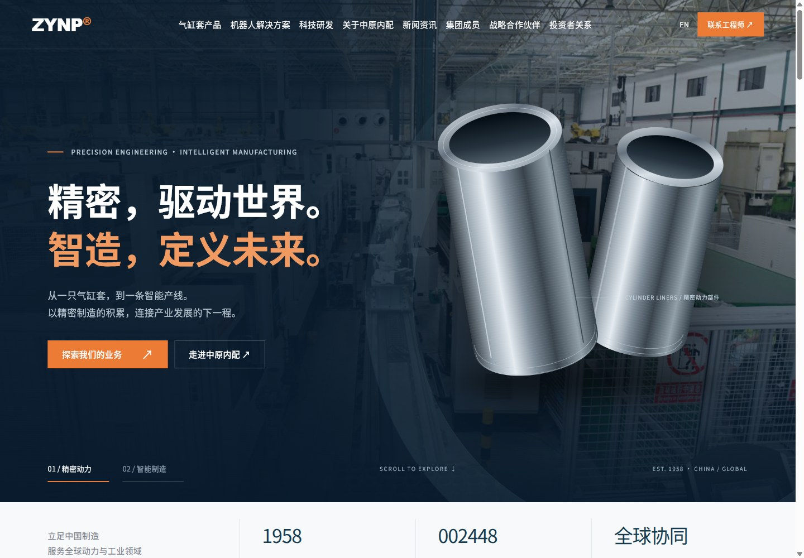
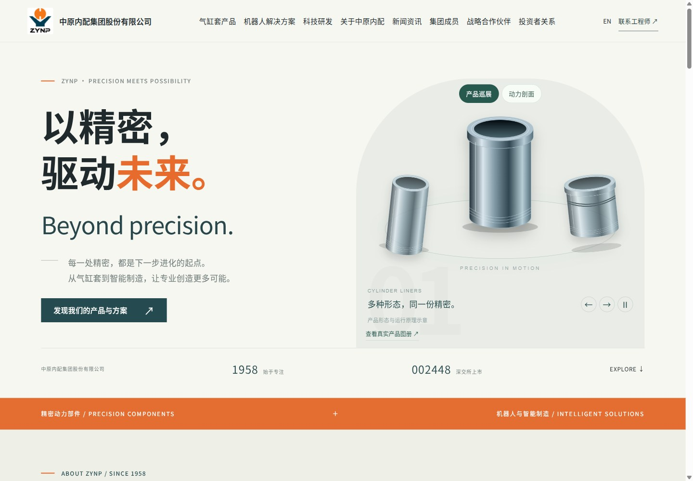
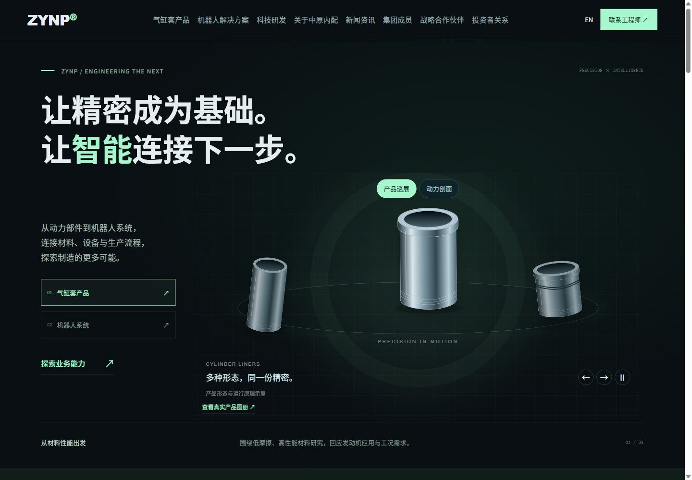
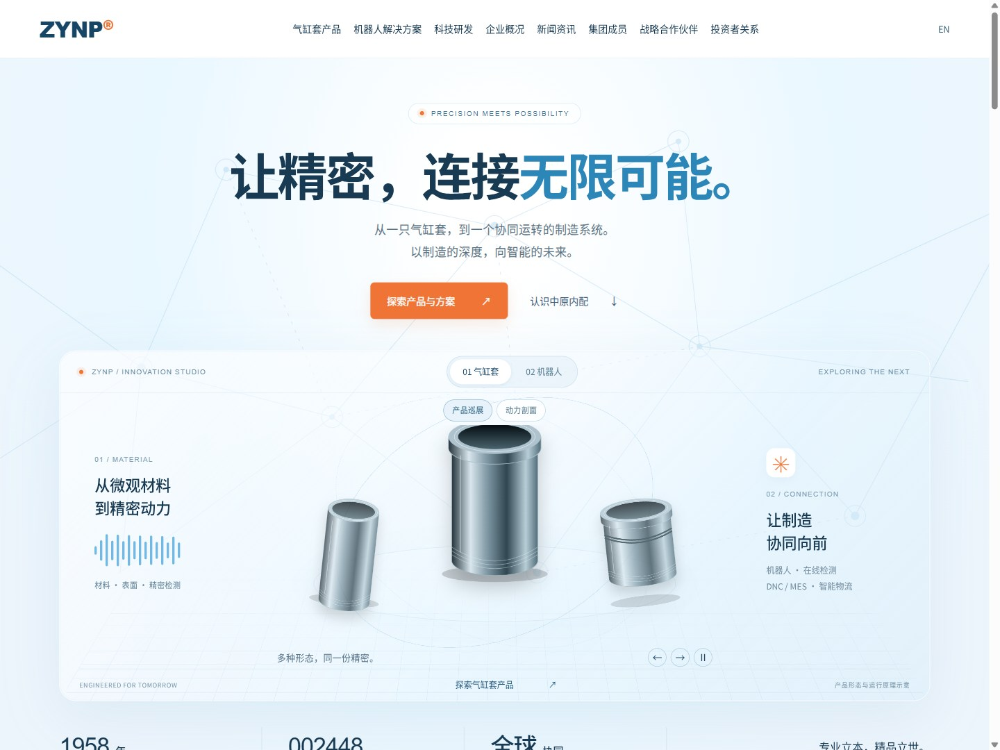

ATHE INDUSTRIAL HORIZON

打开交互方案 ↗气缸套产品 × 机器人与智能制造解决方案
从工业实力到清爽科技，以四种独立结构探索中原内配的新官网。

打开交互方案 ↗
打开交互方案 ↗
打开交互方案 ↗
打开交互方案 ↗| 比较维度 | A · 智造远景 | B · 精密之美 | C · 未来工场 | D · 智启新境 |
|---|---|---|---|---|
| 首屏构图 | 全幅工厂背景 + 产品大图 + 左侧主张 | 左侧大字 + 右侧拱形产品画面 | 上方主张 + 左侧业务切换 + 右侧技术舞台 | 居中品牌主张 + 全景互动展示台 + 浅蓝连接网络 |
| 内容节奏 | 品牌 → 双业务 → 行业 → 技术 → 动态 | 产品 → 错位业务画册 → 行业问答 → 工艺细节 | 交互探索 → 能力链 → 行业 → 制造现场 | 开放首屏 → 双业务 → 行业场景 → AI 愿景 → 研发与集团 |
| 交互重点 | 首屏业务切换、行业标签页、业务详情 | 业务详情、行业折叠面板、联系入口 | 产品/机器人切换、能力热点、制造能力路径 | 产品巡展、动力剖面、机器人切换、行业面板、滚动入场 |
| 落地素材 | 高清产线视频、产品渲染、业务场景 | 高精度产品图、微观材质、工厂摄影 | 实际机器人与产品模型、技术结构说明 | 真实制造照片、原创动态示意、未来连接图 |
| 适合的品牌印象 | 有规模、有实力、清晰可靠 | 精密、专业、克制、有质感 | 前沿、技术导向、系统能力强 | 清爽、开放、面向未来、专业可信 |
参考工业品牌网站的结构与交互，四套方案使用中原内配公开照片及原创概念示意，不复制第三方品牌素材。